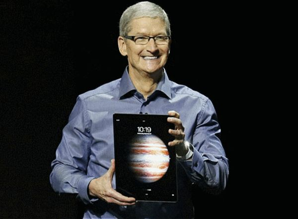
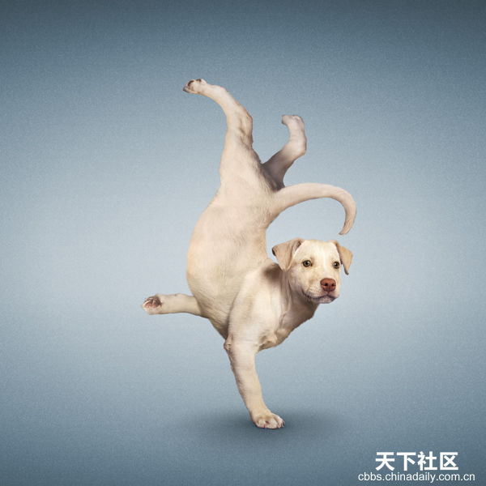

欢迎欢迎

取值
static
这个关键字使得这个元素使用正常的表现，即元素处在文档流中它当前的布局位置，top, right, bottom, left 和 z-index 属性无效。
relative
使用这个关键字来布局元素就好像这个元素没有被设置过定位一样。即会适应该元素的位置，并不改变布局（这样会在此元素原本所在的位置留下空白）。position:relative对table-*-group, table-row, table-column, table-cell, table-caption无效。
absolute
不为元素预留空间，元素位置通过指定其与它最近的非static定位的祖先元素的偏移来确定。绝对定位的元素可以设置外边距（margins），并且不会与其他边距合并。
fixed
不为元素预留空间。通过指定相对于屏幕视窗的位置来指定元素的空间，并且该元素的位置在屏幕滚动时不会发生改变。打印时元素会出现在的每页的固定位置。fixed属性通常会创建新的栈环境。
sticky
The box position is calculated according to the normal flow (this is called the position in normal flow). Then the box is offset relative to its flow root and containing block and in all cases, including table elements, does not affect the position of any following boxes.
容器的位置根据正常文档流计算得出。
当容器B设置为position: sticky时，那么其接下来的容器就会自动计算就好像容器B没有偏移。
When a box B is stickily positioned, the position of the following box is calculated as though B were not offset.
position: sticky在table元素上的效果和position: relative相同。
The effect of ‘position: sticky’ on table elements is the same as for ‘position: relative’.

